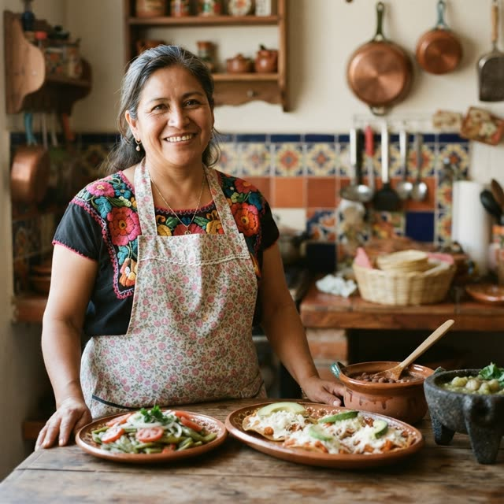
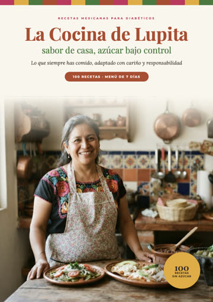
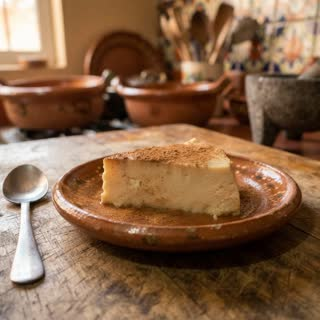

La Cocina de Lupita
100 recetas mexicanas para diabéticos — sin azúcar, sin harina blanca, con antojitos y postres, y los carbohidratos de cada porción.
Recibir las recetas por WhatsApp✅ Recíbelo primero por WhatsApp y paga solo después de revisarlo
⭐⭐⭐⭐⭐ +10,000 ventas de nuestras recetas
Respuesta en 1 minuto • Pago por transferencia SPEI

La comida de siempre — chilaquiles, tinga, pozole y enfrijoladas, adaptados para cuidar tu azúcar
Menú de 7 días — con lista de compras para la semana
Carbohidratos por porción — medidas de casa y paso a paso, con ingredientes del mercado

1Toca el botón verde
2Escríbenos por WhatsApp
3Recibe las recetas y paga después
Toca el botón verde y escríbenos por WhatsApp. El recetario en PDF te llega directo en la conversación.
Están pensadas para personas con diabetes o que quieren bajarle al azúcar: sin azúcar añadida, sin harina blanca y con los carbohidratos de cada porción. No sustituyen la orientación de tu médico o nutriólogo.
Recibes las recetas primero y pagas después, por transferencia SPEI.
Atención rápida por WhatsApp
Este material no sustituye la orientación de tu médico o nutriólogo. No suspendas ni cambies tus medicamentos.